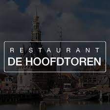

overons
galerij
Info
Onze openingstijden:
Onze keuken is maandag t/m zondag geopend tussen 12.00 uur en 17.00 uur voor de lunch en tussen 17.00 uur en 22.00 uur voor het diner.
U kunt bij ons telefonisch reserveren via 0229-215487.
Routebeschrijving:
Impressie